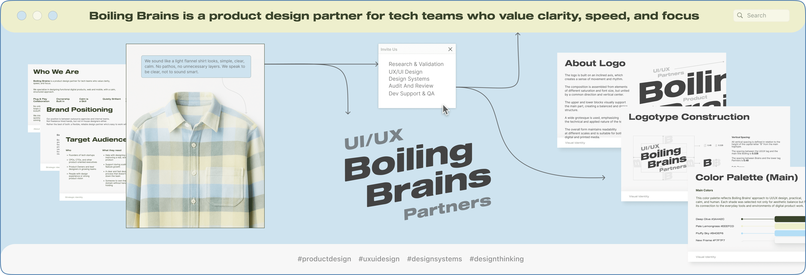
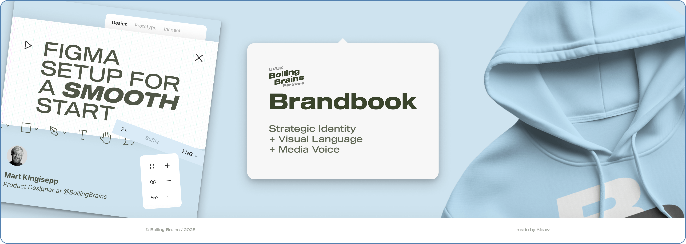
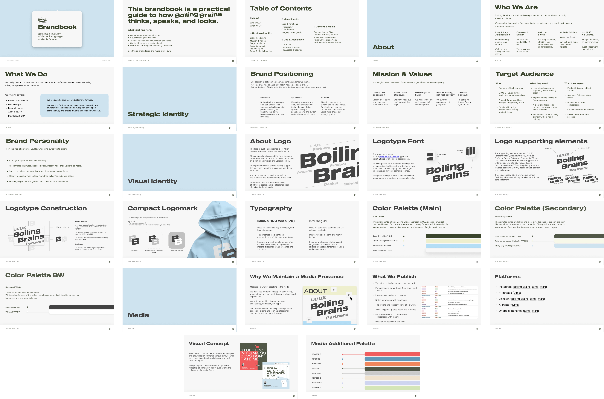
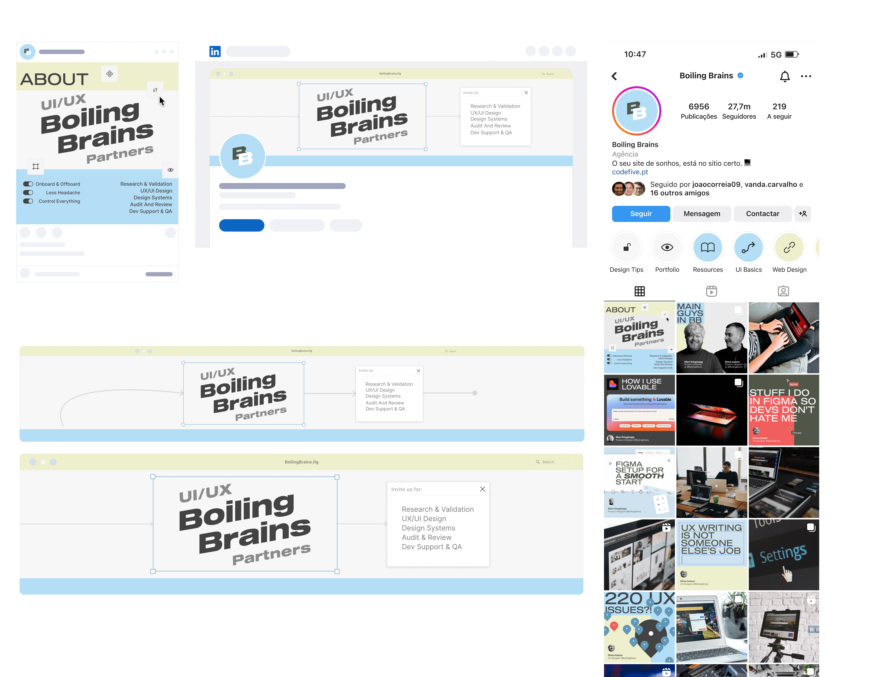
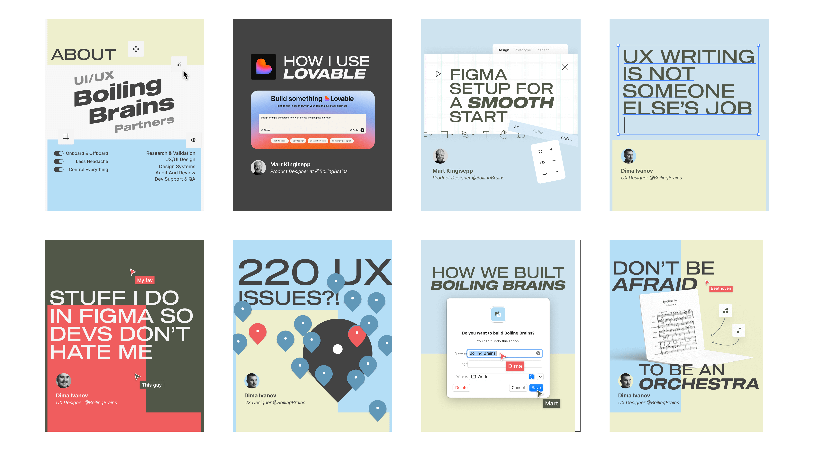
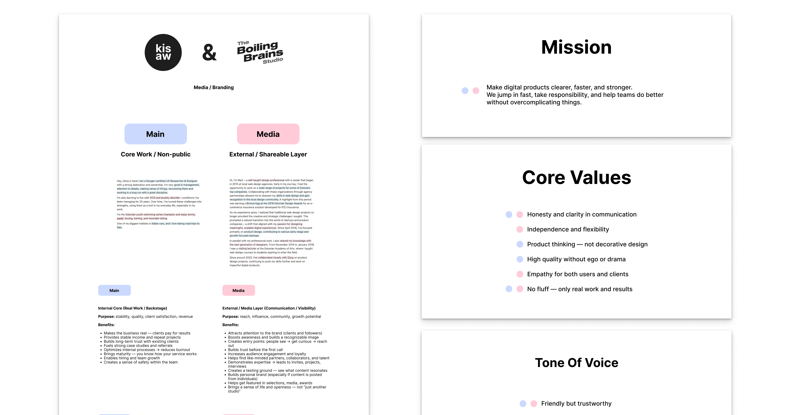
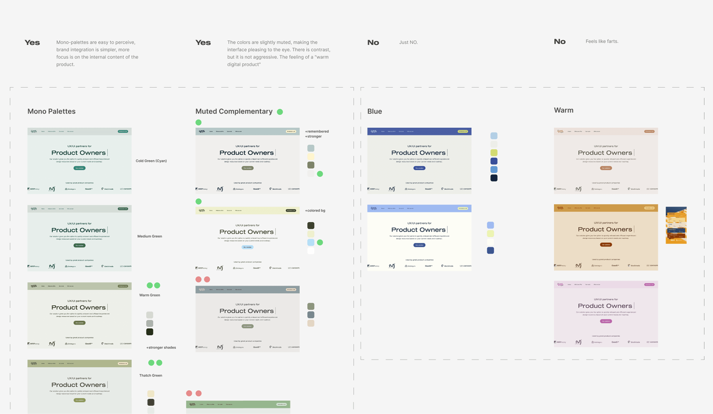
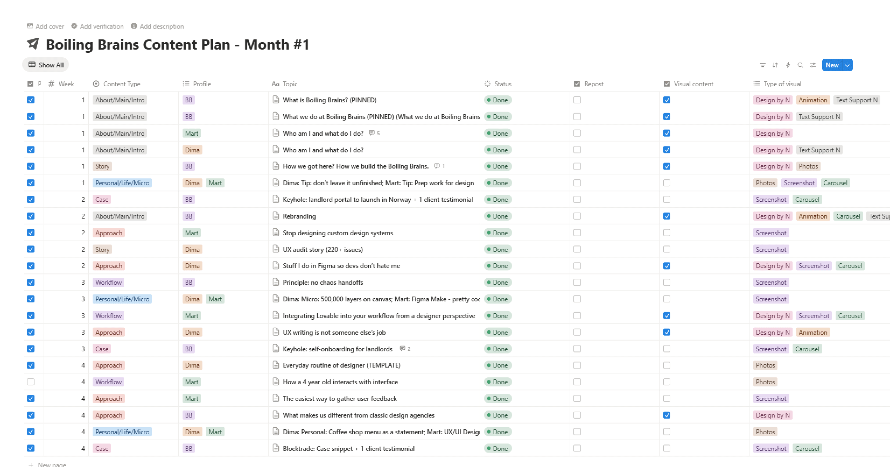

ESTONIA\BOILING BRAINS
BRAND IDENTITY&SM


Brandbook parts:

Social Media Profile Design:

Social Media Blog Content:

PROJECT CONTEXT
Boiling Brains ХУЙ В ЖОПЕ is a UI/UX studio run by two strong specialists. They initially reached out to me for social media content and planning.
The goal was clear: start showing up as "studio bloggers", publishing ideas, experience, and breakdowns on a regular basis, building a recognizable presence and gradually attracting the right audience and inquiries.
At the beginning of the project, we noted a simple fact: the studio didn’t yet have a brand book or a unified system that defined tone of voice, key messages, and visual rules. So we structured the work in two stages: first, build the brand foundation, and then move into social content planning based on that foundation.

BRAND BOOK
We started with a deep briefing and analysis of the studio: the team, their experience, working style, strengths, typical clients, values, and communication goals.
From there, we defined the brand direction: how the studio should sound, what it should stand for, which themes and positions support trust and expertise.
Then I created a brand book that captured the core brand foundation and communication rules, so future content would stay consistent and recognizable.


CONTENT PLANNING AND SOCIAL PROFILES.
Once the brand book was complete, we moved into content planning.
I ran a detailed discovery to understand what topics the team genuinely wanted to speak about, who they wanted to reach, and what kind of audience they wanted to build.
Social media was a long-term strategic channel for them: they planned to launch their own courses in the future, so the goal was to build consistent visibility, sharpen their voice in public, and develop a repeatable posting rhythm that could grow their follower base over time.

I built a structured monthly content planning system and produced three months of weekly post schedules.
We mapped out themes, recurring topics, and communication techniques for both LinkedIn and Instagram, with a clear rotation logic across post types: introductions, expertise, case snippets, workflow insights, and personal micro-notes.
In parallel, I supported the writing and communication side through consultations: helping shape post structure, tone of voice, and copy direction so the content stayed consistent and aligned with the brand foundation.